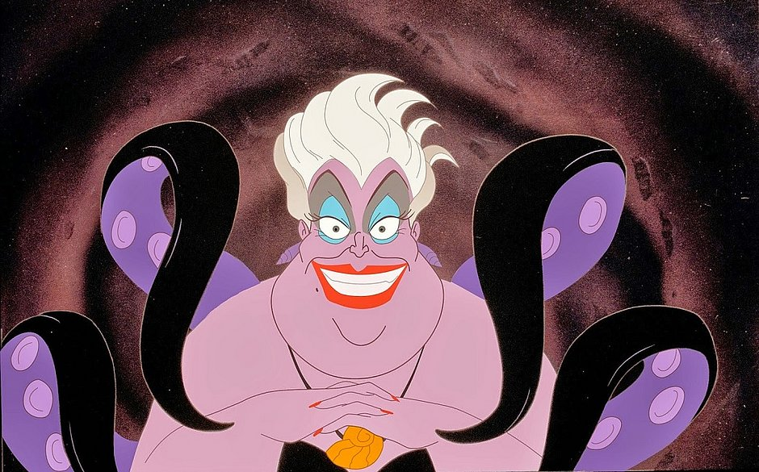

Adaptações
Mecânismos de defesa:
Eles possuem 3 mecanismos de defesa, sendo elas:
- Liberação de uma tinta composta por melanina, que além da nuvem densa, possui cheiro.
- Camuflagem que altera a cor aparente e a opacidade da sua epiderme.
- Autonomia dos braços, de forma semelhante às lagartixas que podem liberar suas caudas. Os braços liberados servem como distrativos para os predadores em sua caça.
Reprodução
O Polvo
Octopus Vulgaris possui duas épocas de reprodução, uma na
Primavera (Maio, Junho) e outra no
Outono (Setembro). Durante a reprodução sexuada dos polvos, a fêmea libera um feromônio sexual na água, que atrai machos, podendo ser fecundada por mais de um parceiro,
sem comportamento de cortejo.
Os machos utilizam seu braço reprodutor para liberar espermatozóides na fêmea que, então, desenvolve os embriões durante 25 a 60 dias, e coloca os ovos em locais abrigados, evitando a alimentação no período de incubação e, então, falecendo logo após o nascimento dos filhotes em consequência da exaustão e da inanição.
Inspiração

-
A personagem Úrsula do desenho "A pequena sereia" teve sua aparência inspirada em um polvo!